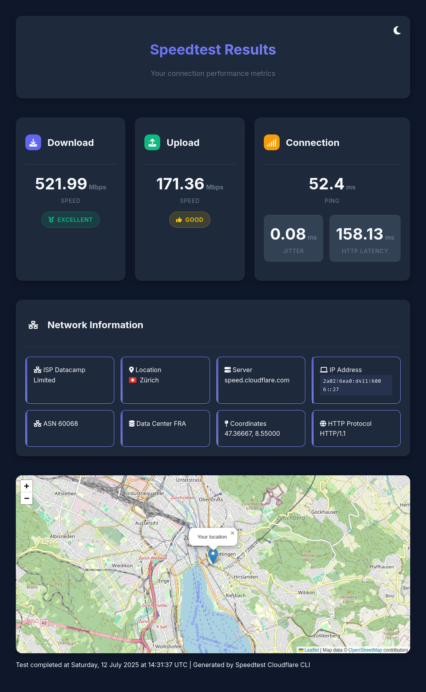

Web Dashboard¶
The speedtest-cli web dashboard provides an interactive, visual representation of your speed test results in a beautiful HTML interface that opens in your browser.

Launching the Dashboard¶
To run a speed test and open the results in your web browser:
speedtest-cli --web_view
This will:
- Run a complete speed test
- Generate an HTML dashboard
- Automatically open it in your default browser
Dashboard Features¶
Overview¶
The dashboard provides a comprehensive view of your network performance with:
- Visual Speed Metrics - Large, easy-to-read speed indicators
- Connection Quality - At-a-glance connection status
- Interactive Map - Your location on an interactive map
- Network Details - Complete metadata about your connection
- Theme Toggle - Switch between light and dark modes
- Responsive Design - Works on desktop, tablet, and mobile
Main Sections¶
1. Speed Metrics Display¶
The top section shows your primary speed test results:
Download Speed - Displayed in Mbps (megabits per second) - Large, prominent number - Color-coded based on speed: - 🟢 Green: Fast (> 100 Mbps) - 🟡 Yellow: Medium (25-100 Mbps) - 🔴 Red: Slow (< 25 Mbps)
Upload Speed - Displayed in Mbps - Similar color coding - Typically lower than download
Latency Metrics - Ping: Round-trip time in milliseconds - 🟢 Excellent: < 20ms - 🟡 Good: 20-50ms - 🔴 Poor: > 50ms - Jitter: Latency variation in milliseconds - HTTP Latency: Application-level latency
2. Connection Quality Indicator¶
A visual badge showing overall connection quality:
- Excellent: Low latency, high speeds
- Good: Decent performance for most tasks
- Fair: Adequate for basic browsing
- Poor: May experience slowdowns
Calculation: Based on a combination of: - Download speed - Upload speed - Ping latency - Jitter
3. Interactive Map¶
Powered by Leaflet.js, the map shows:
Your Location - Pin marker at your coordinates - Based on IP geolocation - City/region displayed
Map Features - Zoom in/out controls - Pan around the map - OpenStreetMap tiles - Responsive to screen size
Privacy Note: The map is rendered entirely in your browser using your approximate location from Cloudflare's API. No tracking or external requests beyond map tiles.
4. Network Metadata¶
Detailed information about your connection:
IP Information
IP Address: 203.0.113.45
IPv6: 2001:0db8:85a3::8a2e:0370:7334 (if available)
ISP Details
Provider: Example Broadband
ASN: AS12345
Location Details
City: San Francisco
Region: California
Country: United States
Coordinates: 37.7749, -122.4194
Cloudflare Information
Data Center: SFO
Colo: San Francisco
Theme Toggle¶
Switch between light and dark modes for comfortable viewing in any environment.
Light Mode - Bright background - Dark text - Better for daytime viewing - Reduced eye strain in bright environments
Dark Mode - Dark background - Light text - Better for nighttime viewing - Reduced blue light exposure - Easier on the eyes in dark rooms
How to Switch: - Click the theme toggle button (usually top-right) - Theme preference saved in browser - Automatically persists across refreshes
Saving the Dashboard¶
The dashboard is a standalone HTML file that includes all results and resources.
Automatic Save Location¶
When you run speedtest-cli --web_view, the dashboard is saved to a temporary file and opened. The file location is typically:
- Linux:
/tmp/speedtest_dashboard_XXXXXX.html - macOS:
/tmp/speedtest_dashboard_XXXXXX.html - Windows:
%TEMP%\speedtest_dashboard_XXXXXX.html
Manual Save¶
To keep the dashboard permanently, save the HTML file from your browser:
Method 1: Save From Browser
1. Run speedtest-cli --web_view
2. In your browser: File → Save Page As...
3. Choose location and filename
4. Save as "Webpage, Complete" or "HTML Only"
Method 2: Redirect Output Currently, the dashboard file path isn't configurable, but you can find it in the temporary directory.
Sharing Results¶
The dashboard HTML file is self-contained and can be shared:
What's Included: - All test results - Embedded CSS and JavaScript - Map functionality (requires internet for tiles) - Complete metadata
How to Share: 1. Save the HTML file 2. Send via email, cloud storage, or file sharing 3. Recipients can open it in any modern browser 4. No installation or special software needed
Privacy Considerations: The HTML file contains: - Your public IP address - Your approximate location (city/region) - Your ISP information
Remove or redact this information if sharing publicly.
Dashboard Technology¶
Built With¶
- HTML5: Modern, semantic markup
- CSS3: Beautiful styling with dark/light themes
- Vanilla JavaScript: No framework dependencies
- Leaflet.js: Interactive maps
- Jinja2 Templates: Server-side rendering
Browser Compatibility¶
Works in all modern browsers:
- ✅ Chrome/Chromium 90+
- ✅ Firefox 88+
- ✅ Safari 14+
- ✅ Edge 90+
- ✅ Opera 76+
Minimum Requirements: - JavaScript enabled - ES6 support - LocalStorage (for theme preference)
Mobile Support¶
Fully responsive design optimized for:
- 📱 Smartphones (portrait and landscape)
- 📱 Tablets (all orientations)
- 💻 Laptops and desktops
- 🖥️ Large displays
Mobile Features: - Touch-friendly controls - Optimized layout for small screens - Fast loading - No horizontal scrolling
Use Cases¶
1. ISP Verification¶
Run tests and save dashboards to document your actual speeds vs. advertised speeds:
# Run test and save dashboard
speedtest-cli --web_view
# Save the HTML file for your records
Great For: - Comparing to ISP promises - Documenting performance issues - Submitting to customer support
2. Network Troubleshooting¶
Visual representation helps identify issues:
- High Ping/Jitter: Network instability
- Low Download: ISP or Wi-Fi issues
- Low Upload: Router or ISP configuration
- Location Mismatch: VPN or routing issues
3. Sharing Results¶
Send dashboard to: - IT support for troubleshooting - Friends for comparison - Social media for discussion - ISP customer service for evidence
4. Before/After Comparisons¶
Document network changes:
# Before upgrade
speedtest-cli --web_view
# Save as "before_upgrade.html"
# After upgrade
speedtest-cli --web_view
# Save as "after_upgrade.html"
Compare the two dashboards side-by-side.
5. Multiple Location Testing¶
Test from different locations and save results:
- Home office
- Living room (Wi-Fi)
- Different floors
- During different times of day
6. Visual Presentations¶
Use in reports or presentations:
- Screenshot the dashboard
- Embed in PowerPoint/Google Slides
- Include in network documentation
- Share in team meetings
Customization¶
Current Customization Options¶
The dashboard currently includes:
- Theme Toggle: Switch between light/dark
- Automatic Browser Detection: Opens in default browser
- Responsive Layout: Adapts to screen size
Future Customization¶
Planned features (check GitHub for updates):
- Custom color schemes
- Export to PDF
- Chart/graph views
- Historical comparison
- Multiple test results in one dashboard
Troubleshooting¶
Dashboard Won't Open¶
Problem: Browser doesn't open automatically
Solutions:
- Check Default Browser:
- Ensure you have a default browser set
-
Try setting a different default
-
Manual Open:
- Find the temporary HTML file in
/tmpor%TEMP% -
Open it manually in your browser
-
Check Browser Installation: ```bash # Linux: Try explicitly firefox "$(find /tmp -name 'speedtest_dashboard*.html' | head -1)"
# macOS open "$(find /tmp -name 'speedtest_dashboard*.html' | head -1)"
# Windows start chrome "C:\Users\YourName\AppData\Local\Temp\speedtest_dashboard*.html" ```
Map Not Displaying¶
Problem: Interactive map shows empty or broken
Solutions:
- Check Internet Connection: Map tiles require internet
- Check Firewall: Allow access to OpenStreetMap servers
- Try Different Browser: Some browsers block external resources
- Disable Extensions: Ad blockers might block map resources
Theme Not Switching¶
Problem: Theme toggle button doesn't work
Solutions:
- Enable JavaScript: Dashboard requires JavaScript
- Clear Browser Cache: Old files might be cached
- Check Browser Console: Look for JavaScript errors (F12 → Console)
- Try Incognito/Private Mode: Test without extensions
Incorrect Location¶
Problem: Map shows wrong location
Explanation: - Location is based on IP geolocation from Cloudflare - May not be exact street address - Usually accurate to city/region level - VPNs will show VPN server location
This is Normal: IP-based geolocation is approximate and can be: - Several miles off - In a nearby city - At ISP's location rather than yours
Dashboard Looks Broken¶
Problem: Styling issues or layout problems
Solutions:
- Update Browser: Use latest version
- Enable CSS: Ensure stylesheets are loaded
- Check Browser Compatibility: Use supported browser
- Disable Reader Mode: May interfere with layout
- Reset Zoom: Set browser zoom to 100%
Privacy and Security¶
Data in Dashboard¶
The HTML file contains:
Personal Information: - Public IP address - Approximate location (city/region) - ISP name
Does NOT Contain: - Exact home address - Personal identification - Browsing history - Device information beyond test results
Safe Sharing Practices¶
Public Sharing: If posting online, consider: - Blurring or editing IP address - Removing precise coordinates - Using screenshot instead of full HTML
Private Sharing: For IT support or troubleshooting: - Full HTML is helpful - Contains necessary diagnostic info - Can be shared safely with trusted parties
Local Storage¶
What's Stored: - Theme preference (light/dark) - Saved in browser's localStorage
What's NOT Stored: - Test results - Personal data - Analytics or tracking
Comparison: Dashboard vs. Console¶
| Feature | Web Dashboard | Console Output |
|---|---|---|
| Visual Appeal | High | Medium |
| Interactivity | Yes (map, theme) | No |
| Shareability | Easy (HTML file) | Screenshot needed |
| Automation | Manual | Easy (scripting) |
| Details | All metadata | All metrics |
| Map | Yes | No |
| Theme | Light/Dark | Terminal theme |
| Browser Required | Yes | No |
Use Dashboard When: - Sharing results with others - Presenting to non-technical users - Documenting for records - Visual comparison needed
Use Console When: - Automation/scripting - Quick tests - Headless environments - CI/CD pipelines
Next Steps¶
- Usage Guide - Learn all CLI options
- Features - Explore all capabilities
- API Reference - Programmatic access
- FAQ - Common questions and troubleshooting